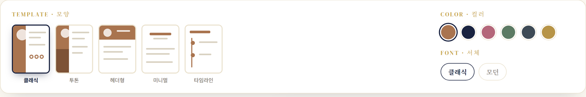
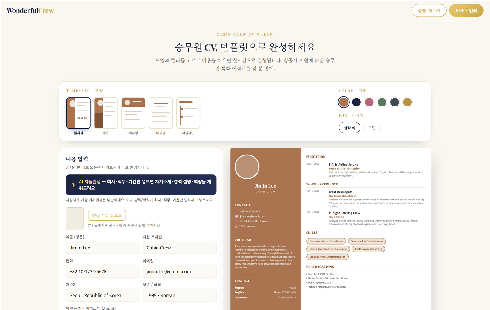
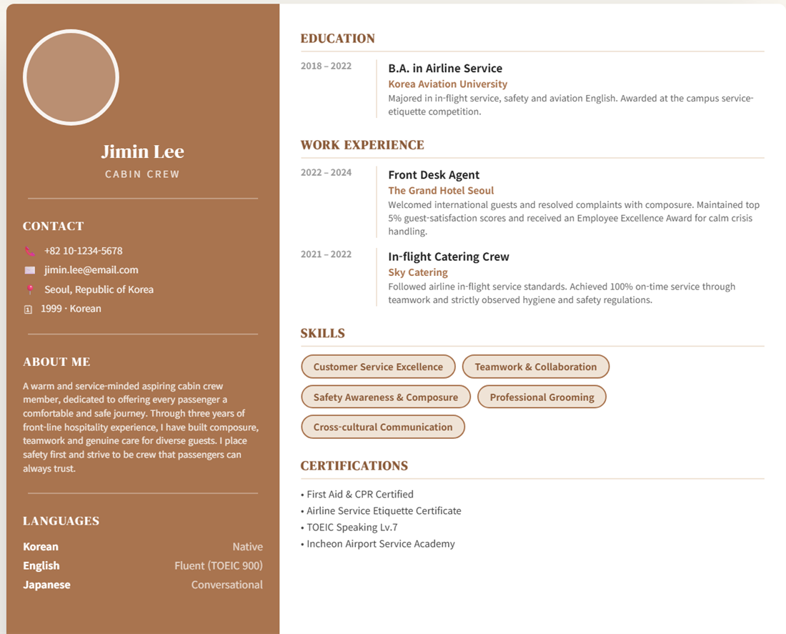

혼자 막막하게 준비하지 않아도 돼요. 당신이 언제 어디서 시작하든, 우리가 끝까지 함께 도와줄게요. 여러분의 가장 좋은 얼굴, 그 안에 이미 있어요.
✈️
원더풀크루 · 승무원 합격을 위한 AI 코칭 ※ 문의처(공식 이메일/링크)는 정미님이 넣어주세요.
원고 2 · 면접사진 만들기
수십만 원짜리 면접 사진, 일상 사진 한 장이면 됩니다
WonderfulCrew · 승무원 면접 코칭
승무원 면접 사진 한 장 찍으려면 뭐가 필요한지 아세요. 헤어, 메이크업, 면접 정장, 그리고 스튜디오 촬영까지. 다 합치면 수십만 원이에요. 지방이나 해외에 있으면 예약하고 찾아가는 것부터가 일이고요.
그래서 만들었어요. 평소 찍은 일상 사진 한 장만 올리면, AI가 승무원 면접 사진으로 완성해 줍니다.
BEFORE · 일상 사진AFTER · 면접 사진
머리·메이크업·재킷 컬러·배경까지 — 사진관에 가지 않아도 이렇게 바뀌어요.
급하게 지원해야 했던, 한 친구의 이야기
독일에 사는 제자가 있었어요. 갑자기 지원 공고가 떴는데, 그 동네엔 승무원 면접 사진을 제대로 찍어줄 곳도 없고 시간도 촉박했죠. 발만 동동 구르던 그 친구에게 말했어요. "일상 사진 한 장만 보내봐."
그 한 장으로 단정한 머리, 밝은 미소, 면접용 재킷과 배경까지 완성된 사진을 만들어 그대로 지원했어요. 그리고 — 합격했습니다. 사진 때문에 포기할 뻔한 기회를, 사진 덕분에 잡은 거예요.
면접 사진, 이렇게 찍어야 해요
많은 분들이 면접 사진을 무표정으로 찍어요. 그런데 승무원 사진의 핵심은 치아가 살짝 보이는 밝은 미소예요. 우리 서비스는 이 기준으로 사진을 진단하고, 어울리는 헤어·메이크업·복장까지 추천해 줘요.
실제 서비스 화면 — 무표정 ❌ / 밝은 미소 ⭕
립스틱 수십 개, 이제 안 사도 돼요
면접 메이크업 컬러 찾겠다고 립스틱·아이섀도 수십 개 사보신 적 있죠. 대부분 몇 번 못 쓰고 서랍에 잠들어요. 우리 메이크업 입혀보기는 내 얼굴에 립·아이섀도 컬러를 직접 입혀보고 어울리는 색을 미리 찾아줘요. 사서 낭비할 일이 없어지는 거죠.
📷 여기에 '메이크업 입혀보기' 화면 캡처를 넣어주세요 (립스틱·아이섀도 컬러 팔레트가 보이는 그 화면)
이제, 준비의 방식이 달라졌어요
사진관 예약하고, 몇십만 원 쓰고, 시간 맞춰 찾아가던 시대는 지났어요. 집에서, 일상 사진 한 장으로, 지금 바로. 원더풀크루는 이 변화를 누구보다 먼저 만들고 있어요.
기회는 늘 갑자기 와요. 그때 사진 한 장 때문에 망설이지 않도록, 우리가 준비를 도와줄게요. 당신의 가장 좋은 얼굴, 우리가 꺼내 드릴게요.
✈️
원더풀크루 · 승무원 합격을 위한 AI 코칭 ※ 문의처(공식 이메일/링크)는 정미님이 넣어주세요.
원고 3 · 승무원 CV 메이커
영문 이력서, 커서만 깜빡이던 밤은 끝났어요
WonderfulCrew · 승무원 면접 코칭
밤 11시. 노트북 앞에 앉아 빈 문서를 열어요. 제목은 그럴듯하게 'CV_final'. 그런데 Work Experience 첫 줄에서 커서만 깜빡깜빡. 카페 아르바이트를 영어로 뭐라고 써야 하지? 이 경력이 승무원이랑 무슨 상관이 있다고 하지?
준비생들이 가장 오래 붙잡고, 가장 자신 없어 하는 게 바로 이 영문 CV예요. 답변 연습은 열심히 하면서, 정작 서류는 며칠씩 미루는 분들 정말 많아요. 어떻게 쓰는지 아무도 안 알려줬으니까요.
'CV_final'만 몇 개째인지 모르는 밤, 다들 있잖아요
그래서, 골라서 채우면 완성되게 만들었어요
원더풀크루 승무원 CV 메이커는 이렇게 굴러가요. ① 템플릿 모양을 고르고 ② 컬러와 서체를 고르고 ③ 내용을 채우면 — 오른쪽 미리보기에 입력하는 그대로 실시간으로 완성돼요. A4 그대로, 인쇄·PDF와 똑같은 모습으로요.

실제 화면 — 모양 5가지 × 컬러 6가지 × 서체 2가지, 클릭만 하면 바뀌어요
클래식, 투톤, 헤더형, 미니멀, 타임라인. 어떤 걸 골라도 승무원 지원에 맞춘 구성이에요. 자기소개(About), 경력, 스킬, 자격, 언어 — 항공사 이력서에 들어가야 할 항목이 처음부터 자리 잡혀 있어서, 뭘 넣을지 고민하며 헤맬 필요가 없어요.
제일 막막한 문장은, AI가 대신 써드려요
사실 템플릿이 있어도 막히는 건 딱 한 군데예요. 문장. 경력을 영어로 어떻게 풀어야 할지 모르겠는 그 부분이요. 그래서 AI 자동완성을 넣었어요. 회사·직무·기간만 넣으면 — 자기소개, 경력 설명, 역량 문장을 AI가 채워드려요. 백지에서 시작하는 게 아니라, 이미 쓰인 문장을 내 이야기로 다듬기만 하면 되는 거예요.

실제 화면 — 왼쪽에 입력하면 오른쪽 A4에 바로 완성돼요
완성본은 이런 모습이에요

사진 넣고 PDF 버튼만 누르면, 이대로 제출하면 되는 서류가 나와요
면접 사진 자리도 있어요. 3:4 사진을 올리면 템플릿에 딱 맞게 들어가고요 — 지난 글에서 소개한 AI 면접사진으로 만든 사진을 그대로 쓰면, 사진부터 서류까지 한 번에 끝나요.
서류는 시작이에요
CV 메이커는 원더풀크루 월정액 멤버십에 포함돼 있어요. 서류, 사진, 매일의 면접 연습까지 — 승무원 준비의 전 과정을 한곳에서, 언제든 원하는 시간에. 준비의 품격이 달라지는 걸 느끼실 거예요.
몇 밤씩 커서만 깜빡이던 그 시간, 이제 연습에 쓰세요. 서류 때문에 시작을 미루는 일은 없게, 우리가 도와줄게요. 여러분의 경력은 생각보다 훨씬 근사하답니다.
✈️
원더풀크루 · 승무원 합격을 위한 AI 코칭 ※ 문의처(공식 이메일/링크)는 정미님이 넣어주세요.